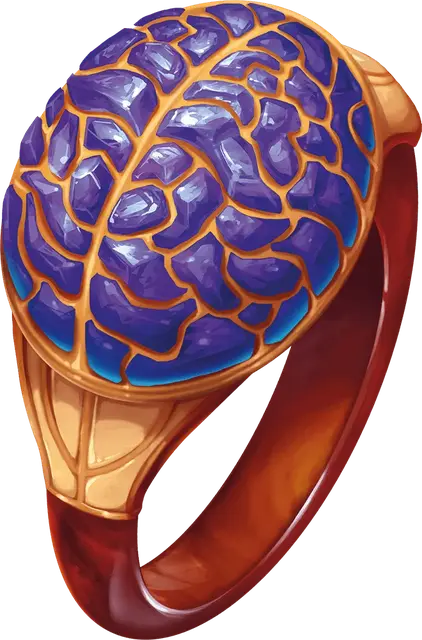

Кольцо защиты разума
Ring of Mind Shielding
Кольцо, необычное (требуется настройка)

Рекомендованная стоимость 101-500 зм
Нося это кольцо, вы обладаете иммунитетом к магии, позволяющей другим существам читать ваши мысли, определять, лжёте ли вы, определять ваше мировоззрение и ваш вид существа. Существа могут телепатически общаться с вами только если вы позволяете это.
Вы можете действием сделать кольцо невидимым, пока вновь не сделаете его видимым другим действием, пока не снимете его, или пока не умрёте.
Если вы умрёте, нося это кольцо, ваша душа входит в него, если только оно уже не занято душой. Вы можете остаться в кольце, а можете отправиться навстречу посмертию. Пока ваша душа находится в кольце, вы можете телепатически общаться с любым существом, которое носит его. Владелец не может отказаться от этого телепатического общения.